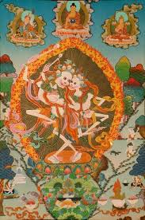

<p>
    <span style="font-size:12px">
        Дхармапалы (защитники) &laquo;Владыки кладбищ&raquo; (санскр. - Читипати, тибет. - Дур-бдаг, бурятск. - Хохимой или Хохимай). В Непале Владыки кладбищ ещё называются Руй-ранг - &laquo;Хозяины костей&raquo;. Это покровители суровых и аскетических медитаций.<br />
        По легенде, божества Читипати были когда-то супругами, тантрическими йогинами, которые медитировали ночью на кладбище. Они так глубоко вошли в состояние медитации, что потеряли связь со временем и ощущение тела. Когда они вернулись из медитации, то увидели, что дикие животные съели их тела, остались одни скелеты. Тогда они дали клятву защищать от животных и грабителей всех практикующих йогов, в особенности кладбищенских.<br />
        Изображаются они в статуэтках и тханках в виде двух хохочущих скелетов в набедренных повязках из шкуры тигра, которые танцуют свой безумный танец на солнечном диске. Этот танец &ndash; символ непостоянства и свободы от всех привязанностей.<br />
        Молния в руках одного из гневных божеств СитиПати &ndash; это ваджра, которая символизирует нерушимость ума и вспышку просветления в буддизме ваджраяны.<br />
        Гневные божества помогают человеку преодолеть свой страх и осознать в этих страшных формах свою пробуждённую природу.<br />
        СитиПати &ndash; постоянные персонажи мистерии ЦАМ.&nbsp;<br />
        Их ритуальная пляска в мистерии означает, что человек умирает в прежнем качестве и возрождается в новом облике. Также Живые скелеты отвечают за Бардо - промежуточное состояние между смертью и новым воплощением. Это всегда был решающий момент для индивидуальной души, которая в этот момент могла как пробудиться, так и вновь вернуться в сансару.
    </span>
</p>
